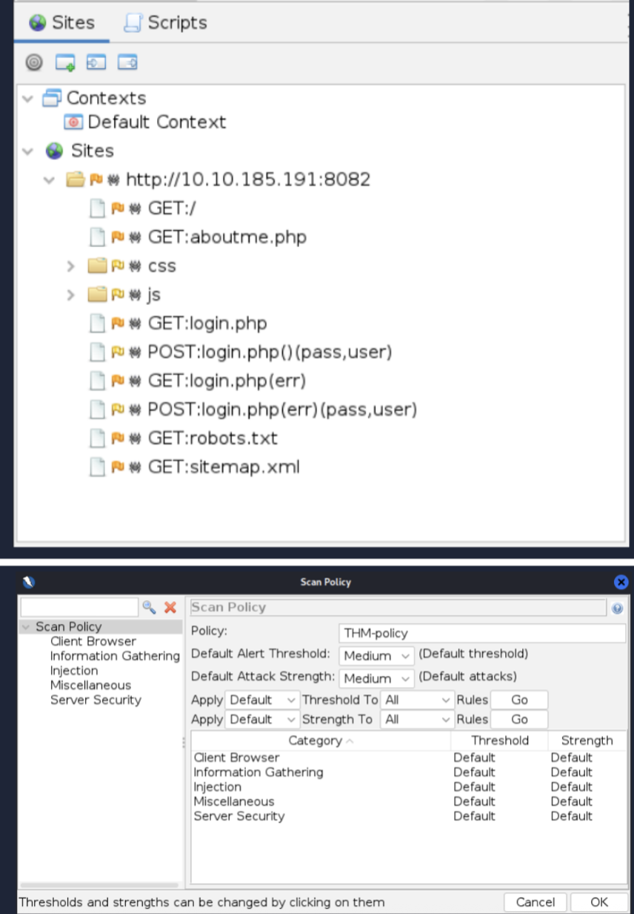
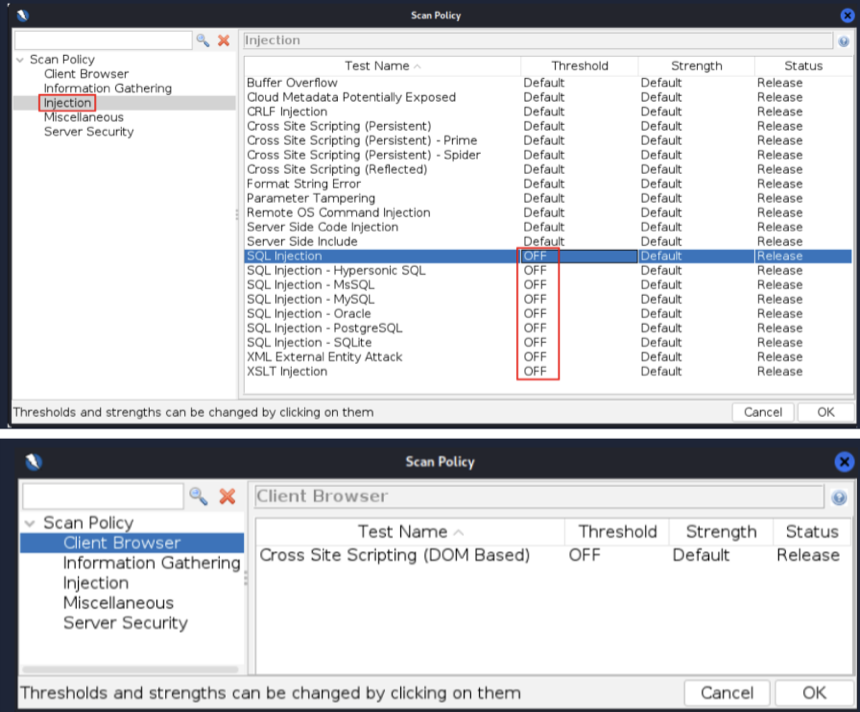
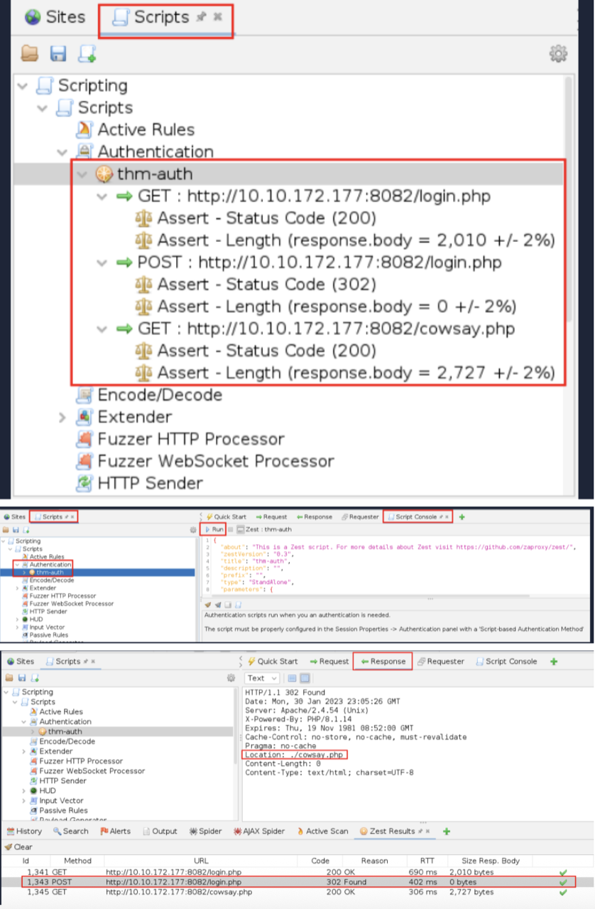
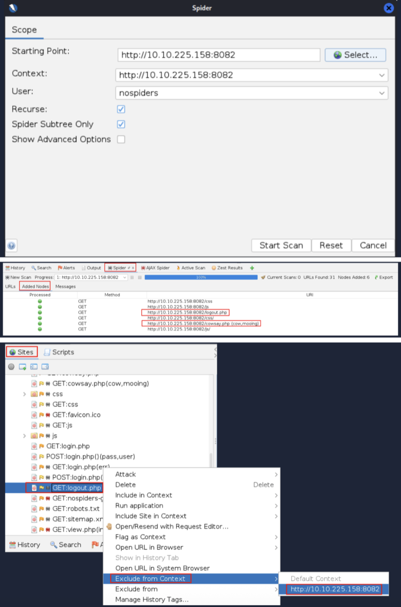
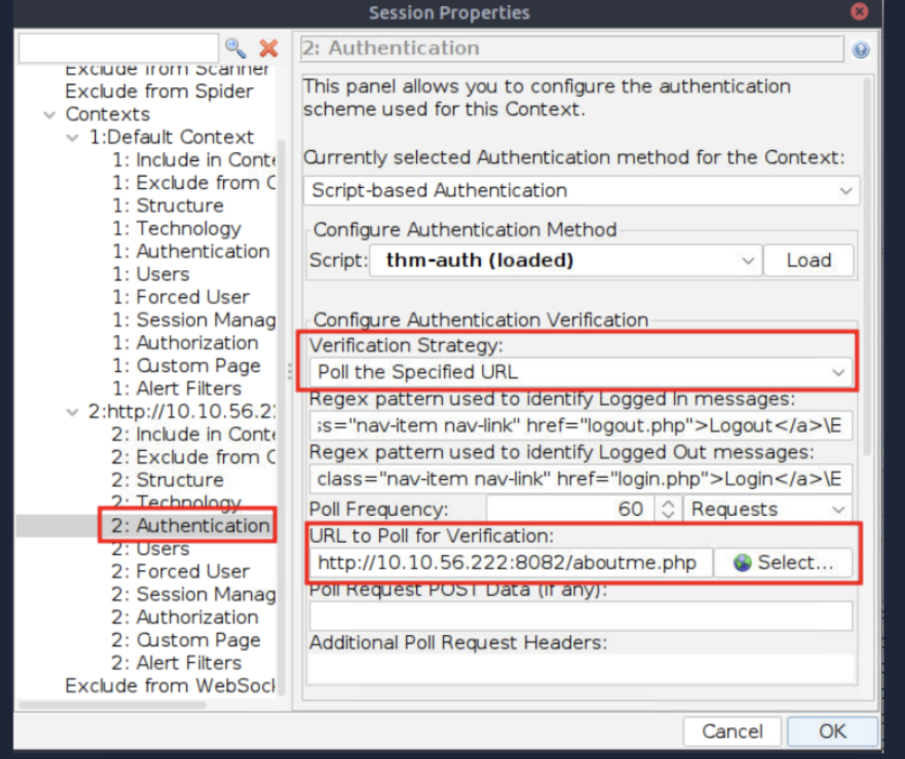

ZAP's spider maps web app resources by following links. Start Tools → Spider and set starting URL (http://MACHINE_IP:8082/).
⚙️
Spider Options
Use Recurse for recursive crawling and Spider Subtree Only to limit to subfolders. Regular spider misses JS-generated links like /nospiders-gallery.php.

🌐
AJAX Spider
Uses a real browser (Firefox/Chrome) to process JavaScript and discover dynamic links. Run Tools → AJAX Spider and choose a browser.

📋
Scan Policy Configuration
Customise tests under Analyse → Scan Policy Manager. Adjust Threshold (confidence) and Strength (test intensity).
🚫
Disabling Irrelevant Tests
Disable SQL/XML tests for apps without databases or XML processing; also disable DOM XSS to speed scans.

🔍
Running the First Active Scan
Use Tools → Active Scan with the custom policy. Review Alerts and mark false positives as needed.
🔑
Handling Logins
Record authentication via a ZEST script (Record New ZEST Script). Login with nospiders/nospiders to capture auth flow.

🗂️
Creating and Configuring Contexts
Include the site in a Context, link the ZEST Script under Script-based Authentication, and add a user.
🔄
Re-spidering and Avoiding Logouts
Re-run spider with the Context/User. Exclude logout.php and add logged-in/logged-out indicators to detect session state.

✅
Final Authenticated Scan
With authentication working, rerun Active Scan to discover vulnerabilities visible only to logged-in users.